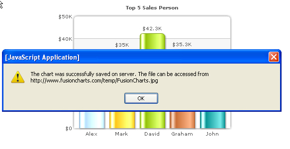

Exporting Charts as PDF or Images > Server-side export > Saving exported output on server disk |
If you do not wish the exported image to be sent back to browser, but instead want it to be saved on the server, you need to make the following changes from the previous example, where the file was downloaded:
Let's first start with Step 1, where you configure the path of your temporary save folder on server and set the HTTP reference for the same. |
| Configuring the server-side export handlers |
In the export handler, you'll need to configure the following:
Depending on which export handler you're using, follow the steps below: If PHP: Open FCExporter.php, scroll down, and make the changes in following lines: |
/* ----------------------- EXPORT PATH & URI -------------------------------- */ /** /** /** /* Define file over-write, auto-naming and naming suffix configuration here. */ |
| If ASP.NET: |
| Open FCExporter.aspx.cs and edit the following: |
|
/// <summary> /// <summary> /* Define your HTTP Mapping URL here. */ /* Define file over-write, auto-naming and naming suffix configuration here. */ |
| If JSP: |
| Open fusioncharts_export.properties file present in the Classes directory and make changes in the following values there. |
| #Please specify the path to a folder with write permissions relative to web application root SAVEPATH=./images/ #This constant HTTP_URI stores the HTTP reference to #the folder where exported charts will be saved. #Please enter the HTTP representation of that folder #in this constant e.g., http://www.yourdomain.com/images/ HTTP_URI=http://www.yourdomain.com/images/ #OVERWRITEFILE sets whether the export handler would overwrite an existing file #the newly created exported file. If it is set to false the export handler would #not overwrite. In this case if INTELLIGENTFILENAMING is set to true the handler #would add a suffix to the new file name. The suffix is a randomly generated UUID. #Additionally, you can add a timestamp or random number as additional prefix. OVERWRITEFILE=false INTELLIGENTFILENAMING=true FILESUFFIXFORMAT=TIMESTAMP |
| If Ruby on Rails: |
| Open lib/fusioncharts/exporter/properties.rb and make changes in the following values there. |
#IMPORTANT: You need to change the location of folder where =begin |
| Configuring the XML |
| As previously mentioned, we just need to do the following changes to XML: |
<chart yAxisName='Sales Figure' caption='Top 5 Sales Person' numberPrefix='$' useRoundEdges='1' bgColor='FFFFFF,FFFFFF' showBorder='0' exportEnabled='1' exportAtClient='0' exportAction='save' exportHandler='http://www.yoursite.com/ExportHandlers/FCExporter.php'> |
This instructs the chart to save the exported image on server. Note that we've not provided a file name here. If not provided, it takes the default value of "FusionCharts". You can, however, specify your file name using exportFileName attribute of <chart> element. However, since in this case, the server path could already have another file name with the same name, the following conditional logic takes place:
|
| Setting up the call back handler |
Now that everything else is setup, the only thing left is to define a JavaScript callback function handler. This callback function is invoked when the chart gets a response back from server - in both success and failure cases. To specify your callback function to chart, you need to specify the function name as exportCallback attribute of <chart> element as under: <chart ... exportCallback='myCallBackFunction' ...> And you then need to define this function in your JavaScript code. However, if you do not define any call back function in your XML, the default callback function FC_Exported is invoked. In either case, an object is passed to the function as FC_Exported(objRtn) or myCallBackFunction(objRtn), which contains the following parameters (returned from server):
Let's quickly see an example code where a callback function has been implemented. In this example, once we receive the confirmation from server, we just show it in a JavaScript alert. |
<html> <body bgcolor="#ffffff"> |
In the above code, note how the default FC_Exported method is called once the server-side export of chart is completed. When you run this code, you'll get the following output. |
|  |
| Here, since we've just one chart in the page, we didn't put any if-then block to check the DOMId of the chart. However, if you've multiple charts in a page, you can do use if-then statements (based on DOMId string match) to take a different course of action when each chart in the page has been saved. |